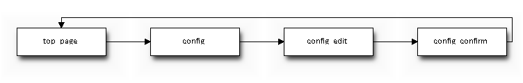

sphinxcontrib-blockdiag is sphinx extension for embedding blockdiag diagrams. You can embed block diagrams with blockdiag directive.
.. blockdiag::
diagram admin {
top_page -> config -> config_edit -> config_confirm -> top_page;
}

You can get archive file at http://bitbucket.org/birkenfeld/sphinx-contrib/
> easy_install sphinxcontrib-blockdiag
To enable this extension, add sphinxcontrib.blockdiag module to extensions option at conf.py.
import os, sys
# Path to the folder where blockdiag.py is
# NOTE: not needed if the package is installed in traditional way
# using setup.py or easy_install
sys.path.append(os.path.abspath('/path/to/sphinxcontrib.blockdiag'))
# Enabled extensions
extensions = ['sphinxcontrib.blockdiag']
This directive insert a block diagram into the generated document. If filename is specified, sphinx reads external file as source script of blockfile. In another case, blockdiag directive takes code block as source script.
Examples:
.. blockdiag:: foobar.diag
.. blockdiag::
diagram {
// some diagrams are here.
}
This is a path for renderring fonts. You can use truetype font (.ttf) file path.
If blockdiag_antialias: is True, blockdiag generates images with anti-alias filter.